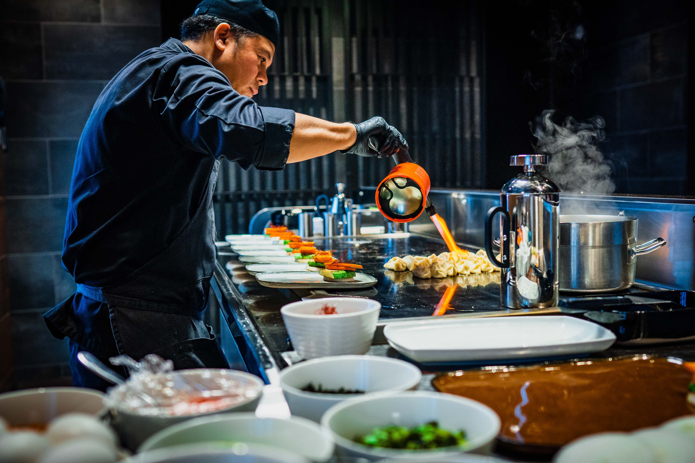

Servicios
Celebre en uno de los restaurantes más premiados de Mango, con vistas panorámicas que abarcan el Sydney Harbour Bridge y la Sydney Opera House. Desde cenas íntimas en el Private Dining Room hasta largos almuerzos en la espectacular Upper Tower y grandes cócteles en The Green Room: Quay ofrece una experiencia gastronómica inmersiva con vistas como ninguna otra.
